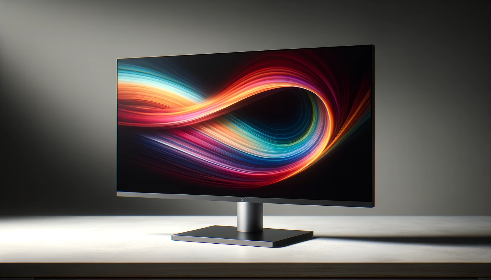

Monitores são uma parte essencial de qualquer setup de computador, seja para trabalho, jogos ou entretenimento. Com várias tecnologias disponíveis no mercado, escolher o monitor certo pode ser desafiador. Vamos explorar as principais diferenças entre LCD, LED, OLED e QLED para ajudá-lo a tomar uma decisão informada.
1. Introdução às Tecnologias de Monitores
Os monitores modernos utilizam diferentes tecnologias de exibição, cada uma com suas características específicas que afetam a qualidade da imagem, consumo de energia e custo. Vamos entender como funcionam e quais são as vantagens e desvantagens de cada tecnologia.
LCD (Liquid Crystal Display)
Como funciona: Utiliza cristais líquidos para formar as imagens. Os cristais líquidos não emitem luz por si mesmos; precisam de uma fonte de luz traseira, geralmente CCFL (lâmpada fluorescente de cátodo frio).
Vantagens:
- Menor custo em comparação com outras tecnologias.
- Boa durabilidade e vida útil.
- Adequado para uso geral, como navegação na web e trabalho de escritório.
Desvantagens:
- Menor qualidade de contraste e cor em comparação com OLED e QLED.
- Ângulos de visão limitados.
LED (Light Emitting Diode)
Como funciona: É um tipo de monitor LCD, mas usa LEDs como fonte de luz traseira em vez de CCFL. Pode ser edge-lit (iluminação nas bordas) ou full-array (iluminação em toda a área traseira).
Vantagens:
- Melhoria na qualidade de imagem e eficiência energética em comparação com LCD.
- Mais fino e leve devido à tecnologia de iluminação LED.
- Melhores níveis de brilho e contraste.
Desvantagens:
- Ainda apresenta alguns problemas de ângulo de visão e uniformidade de iluminação.
OLED (Organic Light Emitting Diode)
Como funciona: Utiliza compostos orgânicos que emitem luz quando uma corrente elétrica é aplicada. Cada pixel é uma fonte de luz independente, eliminando a necessidade de luz de fundo.
Vantagens:
- Melhores níveis de preto e contraste devido ao controle individual de pixels.
- Cores vibrantes e excelente qualidade de imagem.
- Ângulos de visão superiores sem distorção de cor.
Desvantagens:
- Custo mais alto em comparação com LCD e LED.
- Risco de burn-in, onde imagens estáticas podem deixar marcas permanentes na tela.
QLED (Quantum Dot Light Emitting Diode)
Como funciona: É uma tecnologia de LED aprimorada que utiliza pontos quânticos (nanocristais semicondutores) para melhorar a qualidade da imagem. Os pontos quânticos são iluminados por LEDs para produzir cores mais precisas e vibrantes.
Vantagens:
- Melhor precisão de cor e níveis de brilho em comparação com LED.
- Maior durabilidade e menor risco de burn-in em comparação com OLED.
- Excelente para ambientes bem iluminados devido ao alto brilho.
Desvantagens:
- Ainda depende de uma fonte de luz traseira, o que pode afetar a uniformidade da iluminação.
- Custo mais alto em comparação com LED padrão.
2. Qual Tecnologia Escolher?
A escolha da tecnologia de monitor certa depende de suas necessidades específicas e orçamento. Aqui estão algumas recomendações baseadas no uso pretendido:
Uso diário e trabalho de escritório: LCD e LED são opções econômicas e adequadas para tarefas cotidianas. Se o orçamento permitir, um monitor LED é preferível devido à melhor qualidade de imagem e eficiência energética.
Jogos e multimídia: OLED oferece a melhor qualidade de imagem com cores vibrantes e níveis de preto profundos. QLED é uma excelente alternativa para gamers, oferecendo cores precisas e alto brilho.
Trabalho de design e edição de vídeo: OLED é ideal devido à precisão de cor e contraste. QLED também é uma boa opção pela alta precisão de cor e durabilidade.
3. Comparação Prática
| Característica | LCD | LED | OLED | QLED |
|---|---|---|---|---|
| Custo | Baixo | Médio | Alto | Médio-Alto |
| Qualidade de Imagem | Boa | Melhor | Excelente | Excelente |
| Eficiência Energética | Moderada | Alta | Moderada | Alta |
| Durabilidade | Alta | Alta | Média | Alta |
| Risco de Burn-in | Baixo | Baixo | Alto | Baixo |
4. Dicas de Compra
Aqui estão algumas sugestões de modelos populares de monitores em cada categoria:
- LCD: Samsung T350
- LED: Asus VG277Q1A
- OLED: Alienware AW2724DM
- QLED: Samsung Odyssey G6
Além disso, confira avaliações e análises detalhadas antes de tomar sua decisão final para garantir que o monitor escolhido atenda às suas expectativas e necessidades.